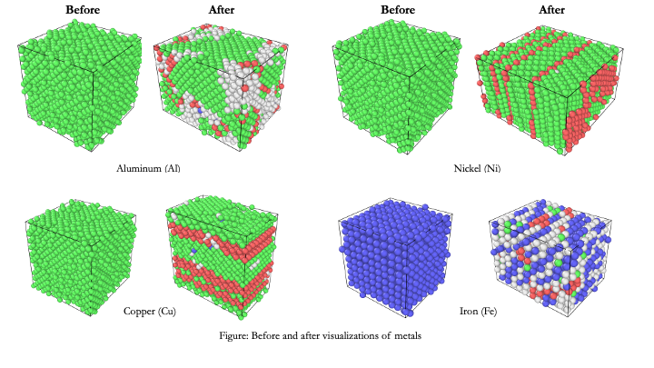
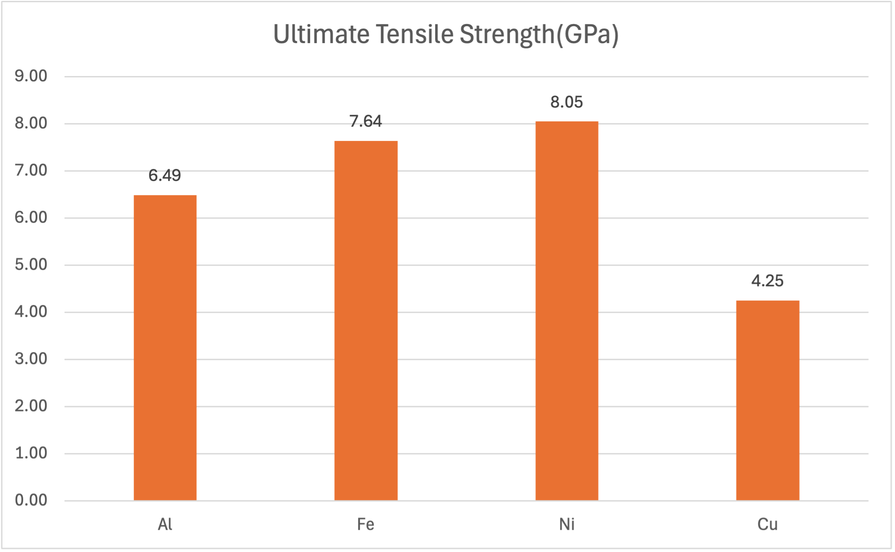

A Comparison Study of Metals Mechanical Properties Under Tensile Loading Using Molecular Dynamics Simulations
ResearchGate report
Abstract
Molecular dynamics simulations have become essential in material science research. An important first step in molecular dynamics is to become familiar with the Lammps-Large-scale atomic/molecular massively parallel simulator. This study employs the Lammps application to conduct simulations of tensile loading on different metals, including aluminum (Al), iron (Fe), nickel (Ni), and copper (Cu). The objective is to collect stress-strain data for the purpose of determining the material's strength including Young's modulus and Ultimate Tensile Strength (UTS). It was found that out of the four metals, Ni exhibits significantly higher Ultimate Tensile Strength (UTS).
Figures

